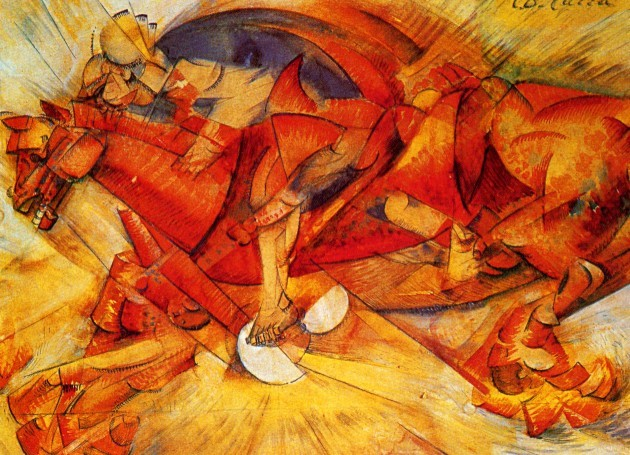
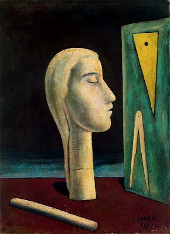

Carlo Carra fue un pintor italiano conocido por su trabajo en los movimientos de pintura metafísica y pintura futurista. Nacida el 11 de febrero de 1881 en Quargnento, Italia, Carra comenzó a trabajar como decoradora de murales a los 12 años. En 1906, Carra se matriculó en la Academia Brera en Milán, Italia, y estudió con el pintor italiano Cesare Tallone.
En 1910, Carlo Carra fue firmante del Manifiesto de los Pintores Futuristas y del Manifiesto Técnico de los Pintores Futuristas. Estos documentos fueron escritos en su mayoría por Umberto Boccioni y firmados por Carlo Carrà, así como por los artistas italianos Luigi Russolo, Giacomo Balla y Gino Severini.
El año 1910 fue el comienzo de la fase futurista de Carlo Carra. Carlo haría pinturas futuristas desde 1910 hasta alrededor de 1917. De 1917 a 1919, Carlo pasó a la pintura metafísica y la pintura anarquista. En las décadas de 1920 y 1930, Carra cambió a la pintura de paisajes.
Carlo Carra murió el 13 de abril de 1966 en Milán, Italia a la edad de 85 años.


En 1910 junto con Boccioni, Russolo y Marinetti, firma el Manifiesto de la Pintura Futurista. Su etapa futurista da como resultado algunos de sus mejores trabajos, que destacan por su tremendo dinamisno. Como buen futurista vio con buenos ojos mostrar movimiento, poder y violencia. Pero en la Primera Guerra Mundial el artista sufrió un cambio, y con él su arte. En un hospital militar conoció a Giorgio de Chirico, el creador pintura metafísica, y decidió unirse al movimiento. Carrà decidió ahora «reintegrar la historia, y precisamente la historia de la pintura italiana». A partir de este momento desarrolla una idea de realidad mágica y clásica al mismo tiempo. Su radicalismo decreció y Carrà empezó una etapa mucho más «moderada», tomando cosas de los clásicos a los que había rechazado años antes.
Fue un pintor muy prolífico, dejando numerosas obras de sus diferentes etapas artísticas, además de varios libros sobre arte.